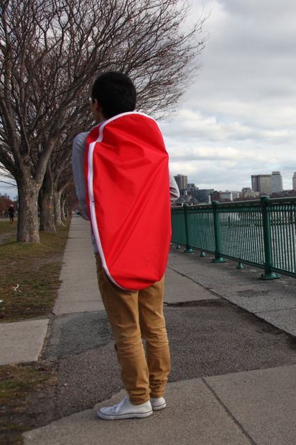
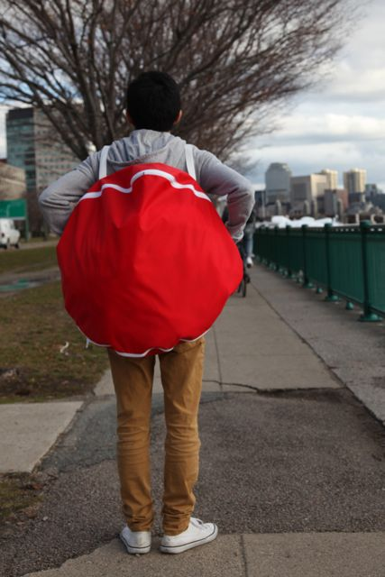

6.849: geometric folding algorithms

I love combining laser cutting fabric and sewing -- it's a fast way to make professional looking garments and bags. After covering D-Forms in class and reading Erik's paper, I knew I had to make a reconfigurable backpack from one. How many times have you tried to put a long, skinny object into your bag, and it won't fit? With the D-Form backpack, you can carry objects of all aspect ratio!
The basic idea was to create a zippable D-Form, such that you can start zipping the zippers together at any point. This would give you a bag in the shape of any of the D-Forms arising from the original panel. Below we can see the two elliptical panels in my backpack in the two extreme configurations:
 |
 |
To realize this dream, I laser-cut two ellipses from Nylon and sewed a zipper onto the edges. Since they don't sell circular zippers (at least that I'm aware), the beginnings and ends are a little bit funny, but with practice this backpack is quickly reconfigurable. I used a French seam to keep the fabric tails tidy. The result is a workable bag, below you can see it carrying two kinds of objects using the appropriate configurations:
{kind=link}
|  |
 |
I'd like to revisit this concept soon. For this version, I used an ellipse just because it was an easy shape to cut. Writing a simulation of the three-dimensional shapes from zipping a given two-dimensional shape seems straightforward. I'm sure that a more useful backpack would come from a more carefully chosen panel shape. Though not as true to the paper, it would also be fun to include stiffening elements to help guide the final shape into more useful forms. Further, developing better ways to handle the ends of the zippers would be an easy way to create a more functional backpack.
{kind=link}
6.849 2012